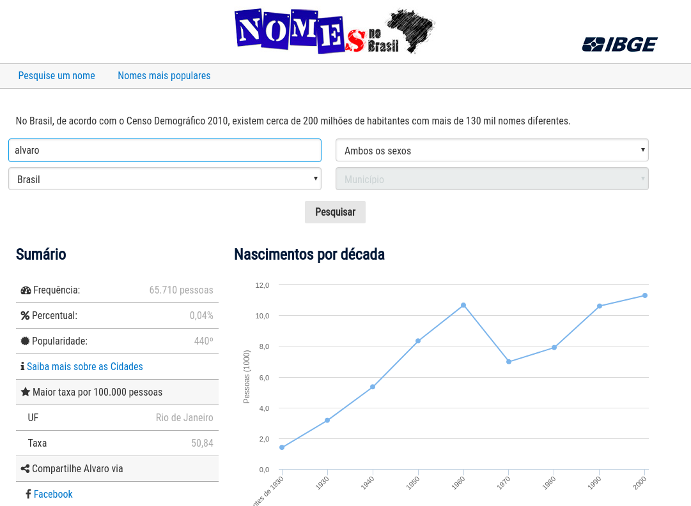
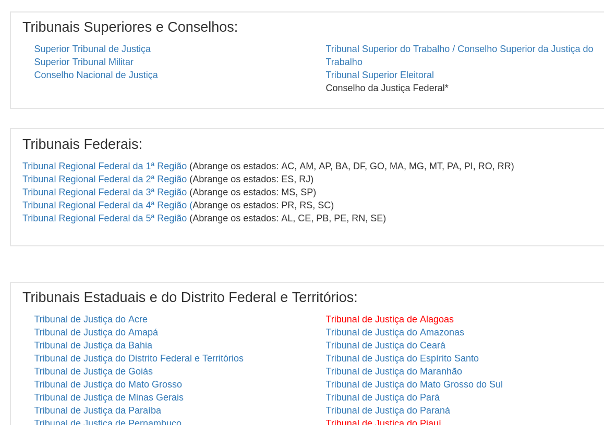
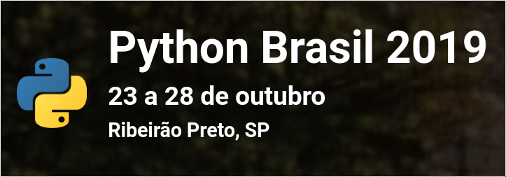
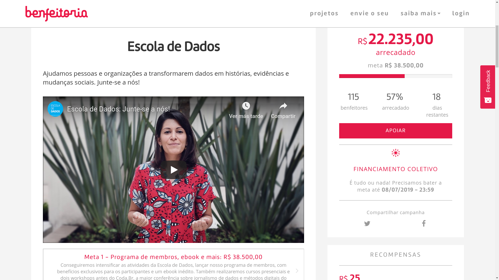

Brasil.IO: Libertação de Dados Públicos, com Python
Álvaro Justen
#CPBSB3 - Brasília - DF
20 de junho de 2019
$ whoami
Turicas, prazer! =)
Sigam-me os bons:
{twitter,
github,
youtube,
slideshare,
instagram}
/turicas
turicas@brasil.io
Brasil.IO
O Brasil em dados libertos
Software Livre & Python
(desde 2004/2005)


Dados Abertos
“ Dados abertos são dados que podem ser livremente usados, reutilizados e redistribuídos por qualquer pessoa - sujeitos, no máximo, à exigência de atribuição da fonte e compartilhamento pelas mesmas regras. ”-- OpenData Handbook (definição de Open Definition)
Mais detalhes:
“ De acordo com o governo brasileiro, o controle social é a participação da sociedade civil nos processos de planejamento, acompanhamento, monitoramento e avaliação das ações da gestão pública e na execução das políticas e programas públicos. ”-- Wikipedia
Operação Serenata de Amor
#civictech

serenata.ai
Rosie, a robô

R$ 191 em um restaurante cujos pratos não custam R$ 40, deputado?
twitter.com/tOa_D/status/1058495655184871425
Jornalismo Investigativo
+
Jornalismo de Dados

(em conjunto com Juan Torres, para correio24horas.com.br)
Acesse a matéria

(em conjunto com Giulliana Biaconi, para generonumero.media)
Leia a matéria
Rua: substantivo (ainda) masculino

(em conjunto com Natália Mazotte, para generonumero.media)
youtu.be/7yQ8U2tFFq4

(em conjunto com Adriano Belisário, para apublica.org)
Acesse a matéria
Aplicações Úteis
Eleições

(em conjunto com Voltdatalab, para poder360.com.br)
eleicoes.poder360.com.br
Data Pipeline

schoolofdata.org/methodology
Maior parte do tempo dos projetos de análise de dados:

Problema antigo
(automação  )
)

Educação Tecnológica
Curso Gratuito (3.000+ alunos)

Python!

Acesse a matéria

xkcd.com/353
Causos da Transparência Brasileira
&
Libertação de Dados
Problema: Migram-se os ministérios, sem dados
Estrelando: Ministério da Justiça

twitter.com/turicas/status/1112491956314259457
Problema: dados dispersos
Estrelando: IBGE
Problema: dado pago! (???)
Estrelando: Receita Federal

https://twitter.com/turicas/status/1019272233095745537
Problema (2): lentidão ao baixar
Estrelando: Receita Federal

twitter.com/turicas/status/1114185311372873729
Problema (3): Formato Proprietário
Estrelando: Receita Federal

Problema: dado disperso e não padronizado
Estrelando: Conselho Nacional de Justiça
Solução
github.com/turicas/salarios-magistrados
twitter.com/turicas/status/943176715672711168
Formato não estruturado
Estrelando: INEMA/BA

Solução
rows convert arquivo.pdf arquivo.csv

github.com/turicas/balneabilidade-brasil
(código ao vivo)
Brasil.IO
O Brasil em dados libertos
Demonstração
PythonBrasil 2019
23 a 28 de outubro, Ribeirão Preto/SP
pythonbrasil.com.br
CODA.BR 2019

23 e 24 de novembro, São Paulo/SP
coda.escoladedados.org
Campanha Escola de Dados
benfeitoria.com/escoladedados
Dúvidas?
“ Restringir acesso a dados públicos é elitizar a democracia. ”-- Manifesto Brasil.IO